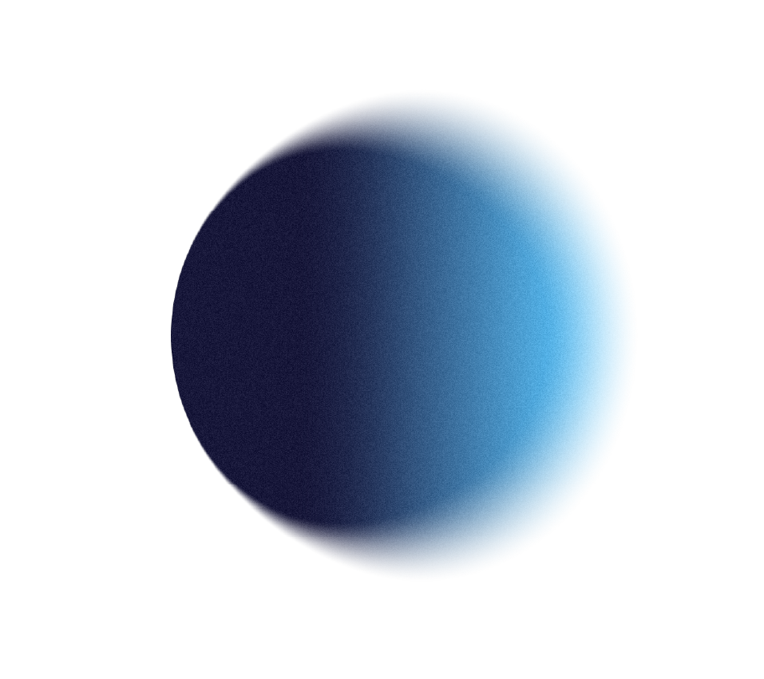

מהתובנה לפעולה
כל עיקרון מדעי מתורגם לתרגול יומי קצר ופשוט, שנכנס לסדר היום האמיתי שלכם — לא לעוד רשימה שנשכחת.
תוכנית לפיתוח אישי · נוירוסיינס × גוף × AI
שיפט היא תוכנית לפיתוח אישי שמחברת בין מדעי המוח, מודעות גופנית ובינה מלאכותית — מסע מעשי מתגובתיות אוטומטית אל חיים של בחירה, יצירה וצמיחה.
נקודת המוצא
רובנו מפרשים את העולם מתוך פחד, לחץ ומצב פנימי הישרדותי. גם כשאנחנו מצליחים לגעת לרגע בחיים ה"מושלמים" שאנחנו מייחלים להם — בלי לשנות את דרך החשיבה, ההרגלים ורמת המודעות, הכול חוזר לאותו מקום. שיפט נולדה כדי לשנות את זה מהשורש.
השיטה
הידע קיים כבר מאות ואלפי שנים. הכלים שנגישים לנו היום מאפשרים לקחת את התובנות של המדענים, אנשי הרוח וחוקרי הגוף והנפש — לרמות חדשות של התפתחות וריפוי.
המוח שלנו ניתן לעיצוב בכל גיל. אנחנו לומדים איך נבנים האוטומטים של פחד ולחץ — ואיך, צעד אחר צעד, מאמנים את המוח לדפוסים חדשים של ביטחון, ריכוז ושמחה. נוירופלסטיות, אפיגנטיקה ומדעי ההתנהגות — בשפה פשוטה וברורה.
שינוי אמיתי לא קורה רק בראש. תרגול יומי של נשימה, תנועה והקשבה לגוף מפעיל את כל המערכות שלנו — ומאפשר לתודעה החדשה להיטמע בגוף, לא רק במחשבה.
ה-AI הוא מראה וכלי צמיחה אישי. הוא מלווה, משקף ומדייק את התרגול היומיומי — והופך תובנות עמוקות לפעולות קטנות ומדויקות, שמתאימות בדיוק לכם.

הלב של התוכנית
לא עוד תאוריה שנשארת בראש. הרגלים יומיומיים קטנים, מגובים במדע, שמקודדים מחדש את מערכת ההפעלה הפנימית שלנו — ומשנים מהשורש את האופן שבו אנחנו חושבים, מרגישים ופועלים.
כל עיקרון מדעי מתורגם לתרגול יומי קצר ופשוט, שנכנס לסדר היום האמיתי שלכם — לא לעוד רשימה שנשכחת.
כל הרגל מפעיל גם את הגוף וגם את התודעה. כי שינוי שנשאר בראש בלבד — לא מחזיק לאורך זמן.
לא טיפול בסימפטומים, אלא קידוד מחדש של הדפוסים שמייצרים אותם — מהישרדות ליצירה.
הסיפור שלנו
במשך עשרות שנים חקרנו את אותו כאב מזוויות שונות — במדע, ברוח, בגוף ובנפש.
הצורך האישי שלנו לצאת ממשבר עמוק הביא אותנו לחבר בין העולמות: מדעי המוח וההתנהגות, אפיגנטיקה, ותרגול שמפעיל את כל המערכות. כך נולדה שיפט — שילוב בין תאוריה לפרקטיקה, שמשנה את התפיסה שלנו על עצמנו ועל החיים.
אנחנו לא מלמדים ממקום של שלמות — אלא ממקום של דרך שעברנו בעצמנו.
לאן זה לוקח אתכם
והיכרות עמוקה עם הרגש החשוב מכול — אהבה.
המסלול
מזהים את האוטומטים — הרגעים שבהם פחד ולחץ מנהלים אותנו בלי שנשים לב.
לומדים את המדע שמאחורי התודעה — איך המוח, הגוף וההרגלים מעצבים את המציאות שלנו.
מטמיעים הרגלים מעצבי תודעה — תרגול יומי קצר שמחבר גוף, מוח ורגש.
עוברים מהישרדות ליצירה — חיים של בחירה מודעת, צמיחה ואהבה.
בואו נכיר. כתבו לנו באינסטגרם או השאירו פרטים לשיחת היכרות — בלי התחייבות, באנושיות מלאה.